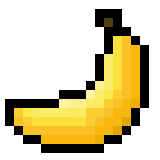
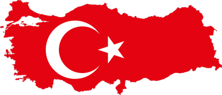
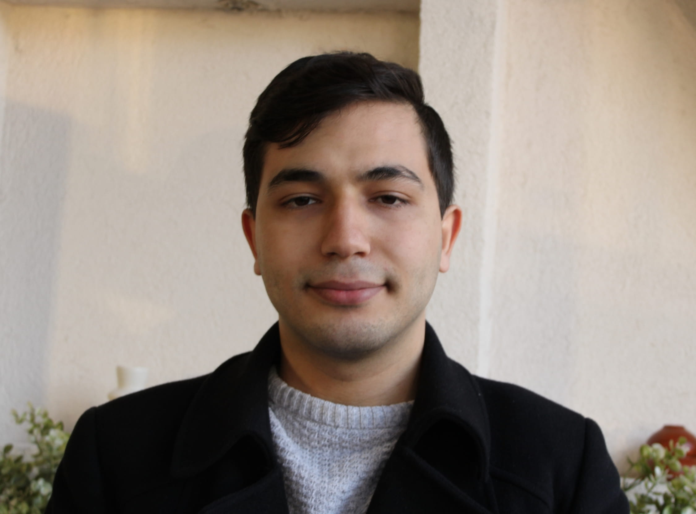
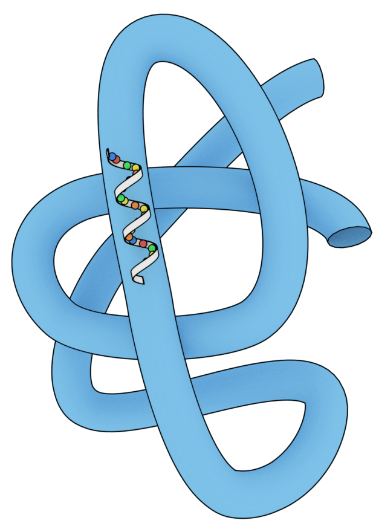
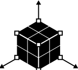

/1405829 /yarati.ci.fikir /cuneytinann /cuneytinan


Gebze Teknik Üniversitesi Moleküler Biyoloji ve Genetik Bölümü'nden, %100 İngilizce yürütülen lisans eğitimimi 2025 yılında 3.08 genel not ortalamasıyla tamamladım. Akademik süreçte edindiğim analitik düşünme ve problem çözme alışkanlığını, çocukluğumdan beri ilgi duyduğum yazılım dünyasıyla birleştirerek Frontend Geliştirme alanına yöneldim. Vanilla JavaScript ve React ile modern, kullanıcı odaklı arayüzler geliştiriyor; temiz kod, performans ve detaylara verdiğim önemle fikirleri işlevsel ürünlere dönüştürmeyi hedefliyorum.
Erken yaşlarda (12–16), algoritmik bilgi gerektiren Valve'ın GoldSrc tabanlı 3B modelleme ortamında topluluk içinde tanınan çalışmalar ürettim ve bu çalışmalar aracılığıyla maddi ve manevi kazanımlar elde ettim. Bu süreçte edindiğim bağlantılarla, günümüzde popüler bir medya markası hâline gelen DarkWeb Haber'in kurucu ekibinde yer aldım. Hâlihazırda, Instagram'da bilim odaklı bir platform olan science.art_ hesabında moderatörlük yapmaktayım. Bu üretim deneyimi ve ekip çalışması geçmişim, freelance projelerde uzun vadeli ve güvenilir iş birlikleri kurmama temel oluşturuyor.
Adaptif yapım, yenilikçi düşünme yaklaşımım ve detaylara verdiğim önem ile uzun vadeli hedeflere odaklanırım. Sürekli öğrenmeyi ve gelişmeyi önemseyerek, çalıştığım projelerde kalıcı değer üretmeyi amaçlıyorum.
